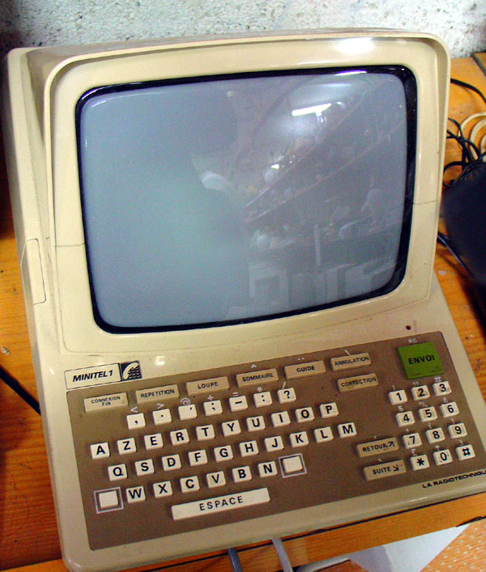

Minitel, the forgotten, almost lost history
The Minitel was a series of terminals designed by French telecom company Postes, Télégraphes et Téléphones, released to the public in 1982.

It was largely supported under the category of Videotex, the same category as the UK's Teletext or the Bulletin Board Systems that covers for a large part of Usenet, some that are still active.
Their intended purpose was to behave similarly to a phonebook, giving French residents access to an electronic telephone directory, since hey, why bother reprinting yellow pages every year, when you can have a subsequently updating directory of telephone numbers?
There's also the benefit of being able to charge per minute used, similar to cellular plans.
As you could probably guess, there wasn't initially much profit with a consistently updating phonebook, that was until a clever of smart folks figured out how to get a chat service working. Now there were financial incentive to keep people on the Minitel as long as possible, and one of the most infamous was the Messageries roses, or Pink Messages, a service where phone operators would behave like they're single and ready to mingle. It got to the point where the french government put taxes relating to pornographic services on the minitel
As the usage of the phrase "Terminal" implies, you are not the sole provider of the processing capabilites, instead relying on central servers hosted by telecom companies.
The Modern equivalent would be having a chromebook with less than a gig of RAM running off of an AMD Athlon SSHing into a supercomputer.
Unfortunately, the central servers were shut down late June 2012, over a decade ago.
However, that's not where our story ends.
Thanks to the European Telecommunication Standard Institute (ETSI), you could've requested and paid for documents relating to the Minitel's central operation.
And because people did that, we have the necessary documents required to reconstruct the central servers that did most of the processing.
If you have a leftover Minitel terminal, have the technical knowhow, and are curious, you can read the documents retaining to the subject matter down below
ETSI Minitel Documents reviving_minitel.pdf